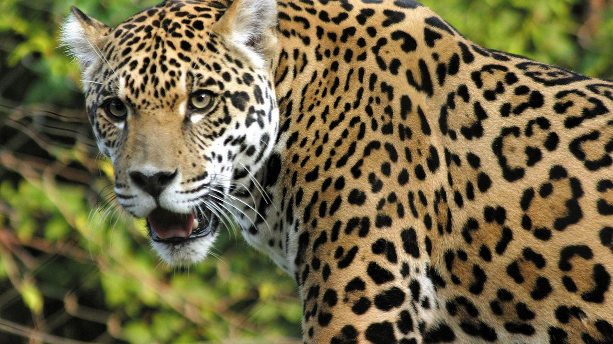
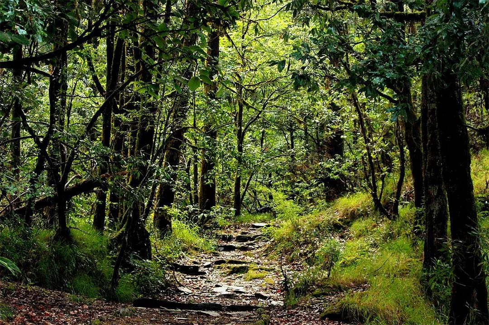
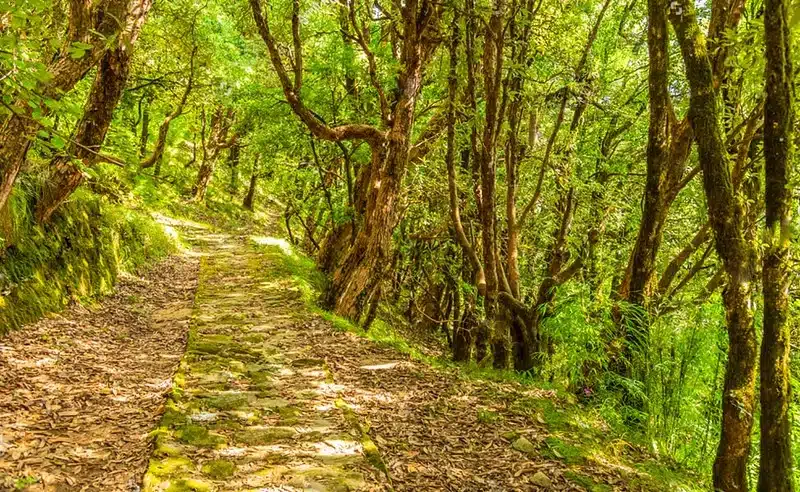
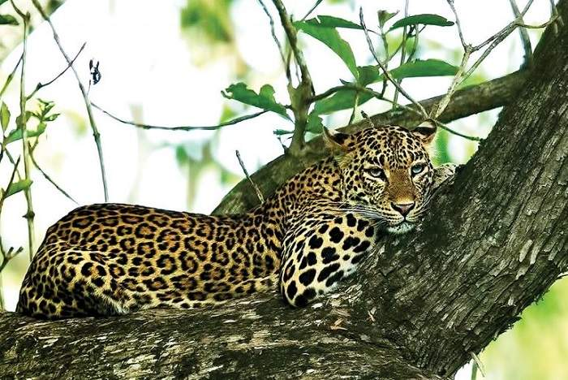
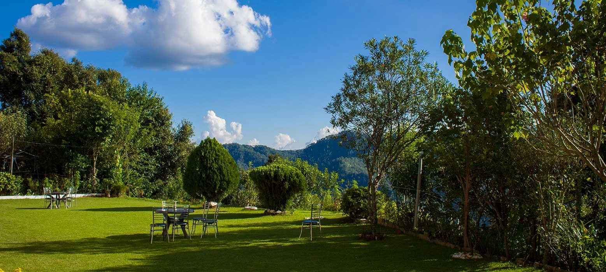

Binsar Wildlife Sanctuary is a pristine Himalayan haven nestled in the Kumaon region of Almora, Uttarakhand. Established in 1988 to protect the shrinking broadleaf oak forests, this 45 sq km sanctuary is blanketed in dense oak, rhododendron, and pine woodlands at elevations up to 2,500 meters. It offers breathtaking panoramic views of snow-capped peaks like Nanda Devi, Trishul, Panchachuli, and Kedarnath, especially from the iconic Zero Point viewpoint. Once the summer capital of the Chand Kings and later a British retreat, Binsar today is a tranquil escape where nature's whispers meet spiritual calm.
Renowned as an Important Bird Area (IBA) by BirdLife International, Binsar hosts over 200 bird species, including rare sightings of Himalayan Monal, Forktails, Khaleej Pheasant, woodpeckers, and migratory visitors in winter. Wildlife enthusiasts can spot leopards, barking deer, langurs, wild boars, Himalayan palm civets, and more amid lush trails. The sanctuary's peaceful atmosphere, combined with easy treks and sunrise/sunset magic at Zero Point, makes it a soul-rejuvenating destination for birdwatchers, trekkers, photographers, and those seeking solitude in the embrace of the Himalayas.
October to March for crisp weather, clear Himalayan views, and migratory birds; March–June for pleasant trekking and rhododendron blooms; September–November post-monsoon for lush greens. Avoid heavy monsoon (July–August) due to slippery trails and road risks. Arrive early for sunrise at Zero Point.
Zero Point trek for 300° Himalayan vistas (sunrise/sunset magic), birdwatching (over 200 species), forest trails for wildlife spotting, rhododendron blooms in spring, and peaceful walks through oak-pine forests — perfect for nature immersion and photography.
Hire a local guide for trails and wildlife spotting, carry binoculars for birds, wear comfortable trekking shoes and layers (cold mornings/evenings), enter early (sanctuary gates open ~sunrise), respect silence in the forest, and book stays in advance — especially eco-resorts inside or near the sanctuary.
"Binsar is where ancient forests guard the secrets of the Himalayas — a quiet sanctuary where every rustle, every dawn-lit peak, and every winged melody invites the soul to pause, breathe, and remember its place in the eternal rhythm of nature."